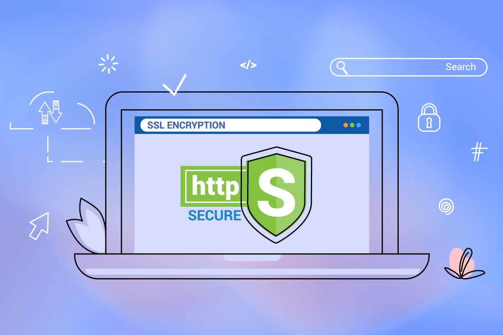
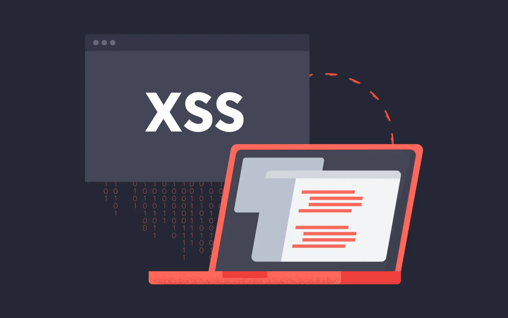
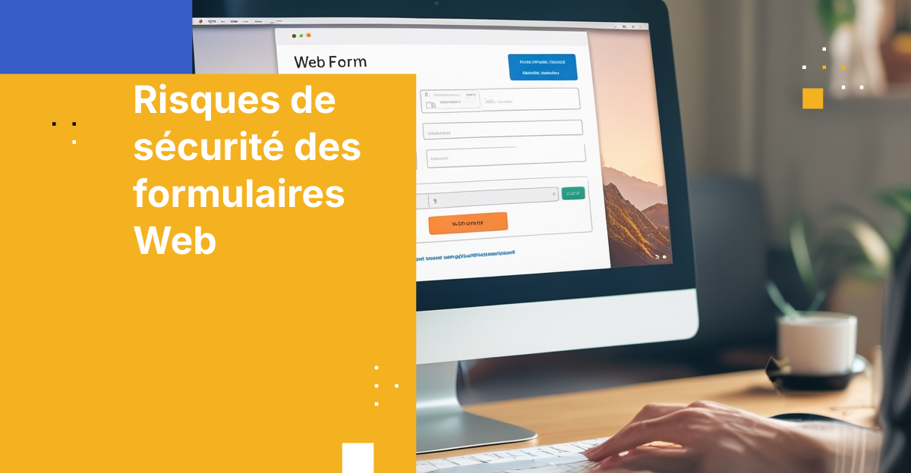
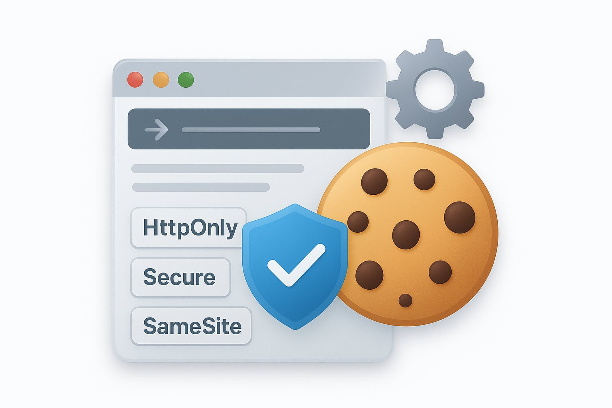
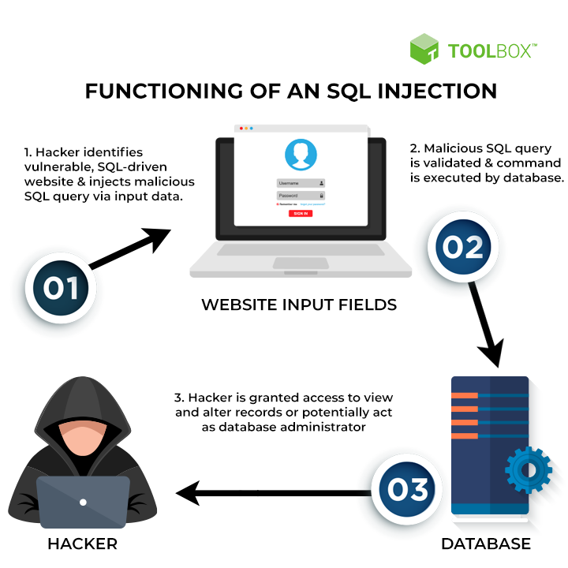

Sécuriser dès le départ
Beaucoup de failles viennent de petites erreurs simples : un mot de passe faible, une saisie non vérifiée, une session mal protégée. Cette section résume les réflexes à adopter quand on développe un site.
ExplorerUn site ne devient sûr que si on pense à la sécurité dès la première ligne de code
Explorer
Sans chiffrement, tout ce qui circule entre le navigateur et le serveur peut être lu. Voyons comment le certificat protège les échanges.
Lire plus
Un script malveillant glissé dans une page peut voler des données. Découvrez comment filtrer et échapper les saisies des utilisateurs.
Lire plus
Un simple champ de formulaire est une porte d'entrée. Validez toujours les données côté serveur, pas seulement dans le navigateur.
Lire plus
Une page invisible superposée peut piéger vos clics. Des en-têtes de sécurité empêchent l'affichage de votre site dans un cadre.
Lire plusBeaucoup de failles viennent de petites erreurs simples : un mot de passe faible, une saisie non vérifiée, une session mal protégée. Cette section résume les réflexes à adopter quand on développe un site.
ExplorerHachage, sel et longueur minimale : on ne stocke jamais un mot de passe en clair dans une base de données.
Lire plus
Les attributs HttpOnly, Secure et SameSite limitent le vol de session et les requêtes forgées.
Lire plus
Les requêtes préparées empêchent un attaquant de modifier votre requête via un champ de saisie.
Lire plus
La liste des dix risques les plus courants, un bon point de départ pour auditer son propre projet.
Lire plusSecuWeb est ma page personnelle pour le TP3 de Programmation Web à l'USTHB. J'y regroupe ce que j'ai retenu sur les attaques web courantes et les moyens de s'en protéger.
Me contacterRetrouvez-moi: